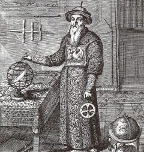

Useful Links
- Curriculum Vitae
- My Research
- astro-ph
- NASA/ADS
- SIMBAD
- VizieR
- AAS
- Astro Pic of the Day
- Star Formation Newsletter
Welcome
Currently I am a postdoc fellow at the Harvard-Smithsonian Center for Astrophysics. Under the supervision of Dr. Pepi Fabbiano. I study the complex circum-nuclear regions in nearby active galaxies and the hot interstellar medium enrichment with the Chandra X-ray Observatory, to understand the nucleus-galaxy feedback in the co-evolution of black holes and galaxies.
I was a PhD student in the Department of Astronomy & Astrophysics at Penn State University. My thesis advisors are Prof. Eric Feigelson and Dr. Leisa Townsley. My work on the massive star forming regions and how the powerful winds and radiation from the massive stars affect their low-mass siblings, with the Chandra X-ray Observatory and the Spitzer Space Telescope. I am also interested in cosmic dust and have some experience in near-infrared instrumentation.
Contact Info.
|
60 Garden St Smithsonian Astrophysical Observatory Harvard-Smithsonian Center for Astrophysics Cambridge, MA 02138 Office: Perkins B-413 Phone: (617)495-7007 Fax: (617)495-7356 Email: juwang AT cfa. harvard. edu |